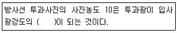
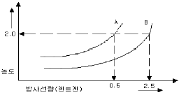
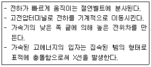
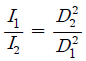
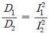
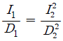
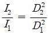
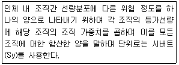
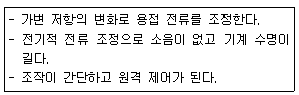

방사선비파괴검사산업기사(구) (2007-03-04 기출문제)
1과목: 방사선투과검사 시험
1. 다음 ( ) 안에 알맞은 적절한 수치는?

- 1/4
- 1/10
- 1/20
- 1/100
(정답률: 알수없음)

2. 방사선투과시험의 단점을 설명한 것으로 틀린 것은?
- 다른 비파괴시험법에 비해 비용이 많이 든다.
- 조사선원의 이동 방향에 수직한 결함은 검출이 어렵다.
- 미세한 표면 균열은 검출되기 어렵다.
- 모든 시험체의 용접부에만 적용할 수 있다.
(정답률: 알수없음)
3. 다음 중 안정원자의 원자번호와 같지 않은 것은?
- 양성자수
- 중성자수
- 궤도전자수
- 핵의 전하수
(정답률: 알수없음)
4. 필름특성곡선에 대한 설명으로 옳은 것은?
- H & D 곡선이라고도 한다.
- 특성곡선의 기울기가 크면 클수록 농도차는 작아진다.
- 필름의 종류에는 영향을 받지만 현상도나 농도에는 영향을 받지 않는다.
- 피사체 콘트라스트를 특성곡선의 기울기라고 한다.
(정답률: 알수없음)
5. 방사선투과시험을 수행할 때 만족하는 투과사진을 얻기 위한 내용의 설명으로 틀린 것은?
- 선원의 유효크기는 가능한 한 작아야 한다.
- 가능한 한 방사선의 중심선이 필름에 수직이 되도록 한다.
- 촬영 범위 내에서 선원과 시험체 사이의 거리는 가능한 범위 중에 먼 것이 좋다.
- 시험체의 관심대상이 되는 면이 필름에 수직이 되도록 한다.
(정답률: 알수없음)
6. 와전류탐상시험에서 와전류의 침투깊이에 영향을 주는 인자와 관계가 가장 먼 것은?
- 주파수
- 전도도
- 투자율
- 전자속
(정답률: 알수없음)
7. 어떤 방사선 동위원소가 5회의 반감기가 지난 후 강도는 처음 강도의 몇 %가 되겠는가?
- 약 13%
- 약 6%
- 약 3%
- 약 1%
(정답률: 알수없음)
8. 다음 비파괴검사법 중 검사결과를 판정할 때 화상처리로 얻은 영상을 주로 활용하는 검사법은?
- 침투탐상검사
- 누설검사
- 자분탐상검사
- 방사선투과검사
(정답률: 알수없음)
9. 다음 중 Ir-192에서 방출되는 γ선에 대한 선형 흡수계수가 가장 큰 물질은?
- 납
- 철
- 구리
- 알루미늄
(정답률: 알수없음)
10. 방사선의 선흡수계수에 대한 설명으로 틀린 것은?
- 선흡수계수(μ)의 단위는 cm-1이다.
- 방사선의 에너지가 클수록 선흡수계수도 커진다.
- 물체의 원자번호가 클수록 선흡수계수도 커진다.
- 물체의 밀도가 클수록 선흡수계수도 커진다.
(정답률: 알수없음)
11. 다음 중 방사선 투과사진의 관찰방법으로 적합하지않은 것은?
- 관찰기 광원의 빛은 직접 눈에 투과되어도 작업에 아무런 문제가 없다.
- 암실에 적당한 밝기의 관찰기를 사용하여야 한다.
- 투과사진 크기에 적합한 크기의 마스트를 사용한다.
- 식별한계콘트라스트가 가장 작아지는 조건에 관찰한다.
(정답률: 알수없음)
12. 고 에너지인 X선의 광량자가 원자핵의 가까운 강한 전장을 통과할 때, 광량자가 소멸하고 음전자와 양 전자가 생성되는 현상을 전자 쌍생성이라 한다. 전자쌍이 생성되려면 문턱에너지 값을 넘어야 한다. 이 값은 얼마인가?
- 0.5MV
- 1.02MV
- 톰슨 에너지 이상
- 콤프톤 에너지 이상
(정답률: 알수없음)
13. 방사선 투과시험시 방사선 안전관리에 관한 설명이 잘못된 것은?
- 사용 후 선원이 용기 내에 있는지 확인한다.
- 작업개시 전 작업주변의 방사선량을 측정, 기록한다.
- 사용 전 선원용기, 안전장치 등이 정상인지 확인한다.
- 방사선 피폭의 시간을 가능한 한 길게 하여야 한다.
(정답률: 알수없음)
14. 방사선 투과사진의 선명도에 영향을 주는 요인 중에 X선이 물체를 통과할 때 생성되는 자유전자들 때문에 생기는 것은 무엇이라 하는가?
- 산란 방사선
- 고유불선명도
- 필름의 입도
- 기하하적 불선명도
(정답률: 알수없음)
15. 다음 중 의료와 산업에 모두 이용되는 방사선투과시험 방법은?
- 전자 방사선 투과시험
- 제로 방사선 투과시험
- 단층 촬영시험
- 중성자 투과시험
(정답률: 알수없음)
16. 다음 중 구조물의 내부에 존재하는 경수소화합물의 검출에 가장 유용한 비파괴시험 방법은?
- 감마선 투과법
- 중성자 투과법
- 초음파 탐상법
- 전자기 유도법
(정답률: 알수없음)
17. 방사성 핵종에 있어서 동중핵기리 짝지어진 것은?
- 7N-15, 8O-15
- 92U-235, 92U-238
- 7N-14, 8O-15
- 27Co-60, 27Co-60m
(정답률: 알수없음)
18. 다음 중 방사선투과검사 시 사용되는 개인 피폭선량계가 아닌 것은?
- 필름 뱃지
- 열형광선량계
- 포켓도시메터
- 서베이메터
(정답률: 알수없음)
19. 관전압 200kV, 관전류 5mA의 X선 발생 장치로 어떤 시험편을 촬영거리 60cm로 2분간 촬영하여 농도 2.0의 사진을 얻었다. 같은 조전 하에서 촬영거리를 80cm로 하여 같은 농도의 사진을 얻으려면 촬영시간은 얼마로 하여야 하는가?
- 2.24분
- 2.94분
- 3.56분
- 3.86분
(정답률: 알수없음)
20. γ선원을 사용하여 작업을 완료한 후 점검해야 할 사항과 가장 관계가 먼 것은?
- 사용 후 선원이 선원용기 내에 있는지 점검한다.
- 사용 후 선원의 이동경로를 추적, 점검한다.
- 선원용기의 외부선량을 서베이미터로 점검한다.
- 사용 후 선원용기를 저장함 또는 보관함에 보관한다.
(정답률: 알수없음)
2과목: 방사선투과검사 시험
21. 강시험체의 γ선 투과 검사시 필름에 산란선 작용을 억제하기 위하여 주위에 배치시키는 masking 물질로 다음 중 적합하지 않은 것은?
- Barium Clay
- Metallic Shot
- Lead Plate
- Cabon Powder
(정답률: 알수없음)
22. 다음 중 형광투시검사의 장점은?
- 고밀도 물체의 검사에 적합하다.
- 탐상감도가 타 방사선투과검사법보다 우수하다.
- 검사 즉시 판정이 가능하다.
- 방사선 피폭이 전혀 없다.
(정답률: 알수없음)
23. 그림에서 200mAㆍsec의 노출조건으로 A 타입의 필름을 촬영하여 사진농도 2.0의 투과사진을 얻었다. B타입의 필름으로 사진농도 2.0을 얻으려면 노출조건은 얼마로 하여야 하는가?

- 200
- 400
- 500
- 1000
(정답률: 알수없음)
24. 필름을 필름홀더에 넣거나 뺄 때 거칠게 취급함으로서 발생할 수 있는 인위적 결함의 종류로 가장 적절한 것은?
- 필름 긁힘, 안개(뿌염)현상
- 줄무늬 현상, 안개(뿌염)현상
- 필름 긁힘, 정전기 표시
- 정전기 표시, 줄무늬 현상
(정답률: 알수없음)
25. 방사선투과검사에서 SFD를 36cm로 놓고 노출시켰을 때 양질의 투과사진을 얻었다. 이 때 다른 조건은 변화시키지 않고 SFD를 180cm로 변경켰을 때의 노출시간은 어떻게 되는가?
- 변하지 않는다.
- 약 4배의 시간이 더 소요된다.
- 대략 55%로 줄어든다.
- 원래 노출 시간의 25%가 된다.
(정답률: 알수없음)
26. 다음 설명과 같은 고 에너지 X선 발생장비는?

- 베타트론
- 공진변압기형 X선 장치
- 선형가속기
- 반데그라프형 발생장치
(정답률: 알수없음)
27. X선 발생장치를 사용하기 전 충분히 예열을 하는 가장 주된 이유는?
- 제어장치를 보호하고 작동을 원활하게 하기 위해
- 안전장치의 정상작동을 점검하기 위해
- 고전압 회로의 과열방지를 위해
- X선관의 수명을 연장시키기 위해
(정답률: 알수없음)
28. 다음 중 투과도계에 관한 설명으로 틀린 것은?
- 검사될 재질과 동일한 재질이어야만 한다.
- 검사될 시험체의 두께에 따라 두께, 구멍 및 선의 크기를 달리하여 구성한다.
- 검사기법의 적정성을 점검하기 위하여 사용한다.
- 상질지시계라고도 한다.
(정답률: 알수없음)
29. 방사선투과검사의 필름 현상시 부적절한 암등을 사용하였을 때 나타나는 가장 큰 현상은?
- 현상시간 단축
- 필름에 fog 발생
- 필름에 황색얼룩 발생
- 필름에 정전기 mark 발생
(정답률: 알수없음)
30. 촬영된 필름의 수동현상에 대한 조건으로 적절한 것은?
- 현상온도 15~18도, 정지액에 2~3분 동안 넣고 교반, 수세시간 1~3분, 건조기내의 온도 80도
- 현상온도 18~22도, 정지액에 20~30초 동안 넣고 교반, 수세시간 30~60분, 건조기내의 온도 40도
- 현상온도 10~15도, 정지액에 20~30초 동안 넣고 교반, 수세시간 30~60분, 건조기내의 온도 28도
- 현상온도 18~22도, 정지액에 2~3분 동안 넣고 교반, 수세시간 1~3분, 건조기내의 온도 40도
(정답률: 알수없음)
31. 다음 용접균열 중 용접금속부가 아닌 모재 부위에 발생하는 균열의 종류는?
- 종균열
- 횡균열
- 마이크로 피셔
- 라멜라 티어
(정답률: 알수없음)
32. 현상작업실인 암실에서의 금지사항을 설명한 것으로 틀린 것은?
- 암실온도는 일정 온도(약 24도)를 넘지 않도록 한다.
- 스크린의 표면을 더럽히지 않도록 한다.
- 필름을 구부리거나 누루지 않도록 한다.
- 필름 통은 세워서 놓지 않도록 한다.
(정답률: 알수없음)
33. 반감기 4일인 방사성 동위원소 100Ci를 150일 동안 방치해 두면 몇 Ci가 되겠는가?
- 12.5Ci
- 20Ci
- 25Ci
- 50Ci
(정답률: 알수없음)
34. 고주파 전기장에 의해 하전입자를 가속시키는 장치로 매우 높은 주파수를 갖는 라디오파 전압을 사용하여, 진행파 가속방법과 정상파 가속방법으로 구분되고 전자총, 집속코일, 관형의 파의 유도로 등으로 구성된 이 장치를 무엇이라 하는가?
- 동조 변압형 X선 장비
- 선형 가속장치
- 베타트론 가속장치
- 반데그라프형 발생장치
(정답률: 알수없음)
35. 다음 중 투과사진 현상작업시 암실에서 사용되는 기기에 해당되지 않는 것은?
- 온도계
- 필름절단기
- 필름걸이
- 투과도계
(정답률: 알수없음)
36. 방사선투과검사를 위한 X선의 발생에 대한 설명 중 잘못 기술된 것은?
- 주로 특성 X선이 발생되는 높은 에너지 특성을 가지므로 이것이 방사선투과시험에 사용되는 것이다.
- X선은 고속으로 이동하는 전자가 물체에 충돌하는 경우 발생된다.
- X선 출력은 관전류에 비례한다.
- 관전압이 높아지면 X선의 파장은 짧아지고 투과력은 증대된다.
(정답률: 알수없음)
37. 촬영한 방사선 투과사진을 현상할 때 정지처리를 하지 않은 경우 발생하기 쉬운 인공결함은?
- 안개현상
- 줄무늬 현상
- 반점현상
- 구겨짐 현상
(정답률: 알수없음)
38. 방사선투과검사에서 방사선의 강도를 I1, I2라 할때, 선원 시험체 간 거리 D1, D2와의 관계가 옳은 것은?




(정답률: 알수없음)
39. 두꺼운 부분과 얇은 부분의 시험체를 동시에 촬영하기 위해 감광속도가 다른 2장의 필름을 한 카세트에 넣어 사용하는 이중 필름기법의 주된 목적은 무엇인가?
- 노출 조건 설정
- 두께 측정
- 결함 크기 측정
- 현상 조건 설정
(정답률: 알수없음)
40. γ선 투과검사의 X선 투과검사의 관전류(mA)에 해당하는 것은?
- γ선 에너지(MV)
- γ선 강도(Ci)
- 선원의 비방사능
- γ선량율 상수
(정답률: 알수없음)
3과목: 방사선안전관리, 관련규격 및 컴퓨터활용
41. 다음 중 1Bq과 같은 것은?
- 3.7×1010dps
- 1dps
- 87.7erg/g
- 100erg/g
(정답률: 알수없음)
42. 주강품의 방사선투과시험방법(KS D 0227)에 따라 흠을 분류할 때 시험부 내에 슈링키지가 존재하는 경우 호칭 두께에 따른 시험시야의 지름 크기(mm)가 틀린 것은?
- 두께 10mm 이하 : 지름 크기 50mm
- 두께 10mm 초과 20mm 이하 : 지름 크기 50mm
- 두께 20mm 초과 40mm 이하 : 지름 크기 60mm
- 두께 40mm 초과 80mm 이하 : 지름 크기 70mm
(정답률: 알수없음)
43. 원자력법시행규칙에는 방사선 작업종사자는 건강진단을 받아야 한다고 규정하고 있다. 다음 중 건강진단 실시 시시로 옳지 않은 것은?
- 최초 방사선 작업에 종사하기전
- 방사선 작업에 종사중인 자는 매년
- 방사선 작업종사자에 대한 피폭방사선량이 0.5밀리시버트인 경우
- 전연도 건강진단 후 12원간의 피폭방사선량이 0.5밀리시버트인 경우
(정답률: 알수없음)
44. 보일러 및 압력용기에 대한 방사선투과검사(ASME Sec.V Art. 2)에 따라 두께 2.5인치의 철강 용접부를 촬영할 경우 허용되는 기하학적 불선명도(ug)는 최대 얼마인가?
- 0.02인치
- 0.03인치
- 0.04인치
- 0.07인치
(정답률: 알수없음)
45. 강 용접 이음부의 바아선투과 시험방법(KS B0845)에서 강판 맞대기 용접 이음부 촬영에 대한 투과도계 사용의 설명으로 옳은 것은?
- 투과도계의 굵은 선이 시험부 양 끝 바깥쪽이 되도록 놓는다.
- 시험부 유효길이의 양 끝에 각 1개를 놓는다.
- 선원측 반대면인 시험부 바닥에 용접 이음부를 걸치지 않게 놓는다.
- 투과도계와 필름 간 거리 식별 최소 선지름의 10배 미만으로 떨어지면 투과도계를 필름 쪽에 둘 수 있다.
(정답률: 알수없음)
46. 다음 중에서 방사선방호 등에 관한 기준에 의거한 방사선 가중치가 가장 큰 방사선은?
- α입자
- 광자
- 2MV를 넘는 양자
- 중성자
(정답률: 알수없음)
47. 알루미늄 평판 접합 용접부의 방사선투과 시험방법(KS D 0242)에 의한 흠집 모양의 분류 중 잘못된것은?
- 텅스텐의 혼입은 흠점수를 구하고 분류표에 의해 분류한다.
- 언더컷 등의 표면 흠집은 이 분류의 대상으로 하지 않는다.
- 융합불량은 항상 4종류로 분류한다.
- 블로홀은 흠점수를 구하고 분류표에 의해 분류한다.
(정답률: 알수없음)
48. 방사선 안전관리상 오염 및 누출관리를 위해 방사성물질 등의 운반과정에 있어서 표면에서의 방사선량율이 얼마를 초과하는 경우, 운반수단, 장비 및 관련부속물을 가능한 신속하게 제염하여야 하는가?
- 0.1μ Sy/h
- 0.5μ Sy/h
- 1μ Sy/h
- 5μ Sy/h
(정답률: 알수없음)
49. 보일러 및 압력용기에 대한 방사선투과검사(ASME Sec.V Art. 2) 규정에 따라 투과시험은 서면 절차서에 따라 수행되어야 한다. 다음 중 이 시험 절차서에 포함되어야 할 최소한의 항목이 아닌 것은?
- 검사체 두께
- 사용 증감지
- 필름의 종류
- 검사체표면 조건
(정답률: 알수없음)
50. 보일러 및 압력용기에 대한 방사선투과검사(ASME Sec.V Art. 2)의 투과도계 1T, 2T, 4T에서 T의 의미는?
- 시험편의 두께
- 투과도계의 두께
- 노출 두께
- 시험시야의 두께
(정답률: 알수없음)
51. 보일러 및 압력용기에 대한 방사선투과검사(ASME Sec.V Art. 2)에서는후방산란선을 확인하기 위해서 납글자 "B"를 사용하는데 이 납글자의 최소 크기는?
- 두께 1/32인치, 높이 1/3인치
- 두께 1/16인치, 높이 1/3인치
- 두께 1/16인치, 높이 1/2인치
- 두께 1/8인치, 높이 1/2인치
(정답률: 알수없음)
52. 다음 중 강 용접 이음부의 방사선투과 시험방법(KS B 0845)에 규정한 강판 맞대기 용접 이음부에 대한 투과 사진의 필요조건을 설명한 것으로 옳은 것은?
- 모재 두께가 4mm 이하인 A급 상질의 경우 계조계는 10형을 쓴다.
- 상질의 종류가 A급인 경우 농도의 범위는 1.8 이상 4.0 이하이다.
- 모재 두께가 4mm 이하인 A급 상질의 경우 투과도계의 식별 최소 선지름은 0.125mm 이하이다.
- 1회 촬영에서의 시험부 유효길이는 투과도계의 식별 최소 선지름 이하만 만족하는 범위이면 된다.
(정답률: 알수없음)
53. 방사선투과시험에서 체외피폭에 대한 방어가 중요하다. 체외피폭의 방어 3대 원칙에 포함되지 않는 사항은?
- 선원과 인체와의 거리를 최대로 한다.
- 방사선 피폭의 시간을 가능한 짧게 한다.
- 선원과 인체 사이에 차폐 물질을 활용한다.
- 선원의 질량을 가능한 한 무거운 것을 활용한다.
(정답률: 알수없음)
54. 원자력법령에서 규정하고 있는 방사선작업종사자의 수정체에 대한 등가선량한도는?
- 연간 150밀리시버트
- 연간 500밀리시버트
- 연간 5시버트
- 연간 10시버트
(정답률: 알수없음)
55. 다음의 설명이 나타내는 용어는?

- 집단선량
- 예탁선량
- 유효선량
- 흡수선량
(정답률: 알수없음)
56. 웹브라우저 프로그램에서 자주 방문하는 URL을 목록으로 모아서 관리하는 메뉴는?
- Find
- URL Info
- URL List
- Bookmark
(정답률: 알수없음)
57. 인터넷어서 하이퍼텍스트 문서를 주고받기 위한 프로토콜은?
- FTP
- Telnet
- HTTP
- Explore
(정답률: 알수없음)
58. 컴퓨터의 제어장치의 구성요소 중 다음에 실행할 명령어의 주소를 기억하는 것은?
- 프로그램카운터
- 기억레지스터
- 번지레지스터
- 명령레지스터
(정답률: 알수없음)
59. 인터넷에서 사용하는 대표적인 스크립트 언어로서 웹과 데이터베이스를 연결하는 언어는?
- Lisp
- PL/1
- PHP
- Ada
(정답률: 알수없음)
60. 다음 중 인터넷 검색엔진의 종류가 아닌 것은?
- Yahoo
- Altavista
- Naver
- MIME
(정답률: 알수없음)
4과목: 금속재료 및 용접일반
61. 아래 보기와 같은 특성을 갖는 교류 아크 용접기로 가장 적합한 것은?

- 가동철심형
- 탭 전환형
- 가동 코일형
- 가포화 리액터형
(정답률: 알수없음)
62. 다음 중 용착금속 보호 방식에 따른 피복제의 종류가 아닌 것은?
- 슬래그 생성식
- 가스 발생식
- 반가스 발생식
- 아크 안정식
(정답률: 알수없음)
63. 전기용접봉의 기호 E 4301에서 43은 무엇을 나타내는가?
- 피복제의 종류
- 용착금속의 최소인장강도
- 용접자세 종류
- 아크 용접시의 사용전류
(정답률: 알수없음)
64. 저항용접에서 점용접의 품질에 영향을 미치는 요인 중 가장 큰 요소가 아닌 것은?
- 통전시간
- 용접전류
- 프라즈마
- 가압력
(정답률: 알수없음)
65. 정격전류 200A, 정격사용률 50%인 아크 용접기로 실제 150A의 전류로 용접할 때의 허용 사용률은?
- 약 67%
- 약 78%
- 약 89%
- 약 98%
(정답률: 알수없음)
66. 일반적으로 가스용접에서 가장 많이 이용하는 가스는?
- 수소 - 산소
- 산소 - 아세틸렌
- 질소 - 산소
- 수소 - 아세틸렌
(정답률: 알수없음)
67. 용접 후 피닝을 하는 주목적은 무엇인가?
- 도료를 없애기 위해서
- 용접 후 잔류 응력을 제거하기 위해서
- 응력을 강하게 하고 변형을 적게 하기 위해서
- 모재의 균열을 검사하기 위해서
(정답률: 알수없음)
68. 다음 중 저항 용접에 속하지 않는 것은?
- 프로젝션 용접
- 스터드 용접
- 점 용점
- 심 용접
(정답률: 알수없음)
69. 테르밋 반응과 관계가 없는 것은?
- 알루미늄과 FeO
- 알루미늄과 Fe2O3
- 알루미늄과 Fe3O4
- 알루미늄과 Cr2O3
(정답률: 알수없음)
70. 용접구조 설계상의 주의 사항이 아닌 것은?
- 용접하기 쉽도록 설계할 것
- 용접 길이는 가능한 길게 할 것
- 용접 이음은 한 곳에 집중하지 말 것
- 결함이 생기기 쉬운 용접은 피할 것
(정답률: 알수없음)
71. 다음 중 Al-Mg 합금에 대한 설명으로 틀린 것은?
- Al에 약 10%Mg을 품은 합금을 Hydronalium이라 한다.
- α고용체와 β상이 450도에서 공정을 만든다.
- 고온에서 Mg고용도가 높아지므로 약 400도에서 풀림하면 강도와 연신이 좋아진다.
- Al-Mg합금의 용탕은 산화가 잘되지 않기 때문에 산화물이 들어가도 상관없다.
(정답률: 알수없음)
72. 비정질합금의 일반적인 특성에 대한 설명 중 틀린것은?
- 전기저항이 크다
- 열에 강하며, 가공경화를 일으킨다.
- 구조적으로는 장거리의 규칙성이 없다.
- 균질한 재료이고, 결정이방성이 없다.
(정답률: 알수없음)
73. 다음 설명 중 틀린 것은?
- 톰백은 Zn이 5~20% 함유한 것으로 금박의 대용으로 상용된다.
- 문쯔메탈은 6:4 황동으로 열교환기나 열간 단조용으로 사용된다.
- 쾌삭 황동에서는 절삭성을 좋게 하기 위해 Pb을 첨가한다.
- 5:6 황동에는 Zn을 1%로 첨가한 황동을 네이벌황동이라고 한다.
(정답률: 알수없음)
74. 동소변태에 대한 설명 중 틀린 것은?
- 고체 내에서 원자배열의 변화에 의해서 생긴다.
- 결정격자의 형상이 변하기 때문에 나타난다.
- 동소변태 A4의 온도는 약 1400도에서 일어난다.
- 점진적이고 연속적인 변화에 의해 생긴다.
(정답률: 알수없음)
75. X선 회절 시험에서 사용되는 브래그의 법칙을 정의한 식으로 옳은 것은? (단, d:결정의 면간거리, λ:파장, θ:반사각도, n:정정수)
- nλ=2dㆍcosθ
- nλ=2dㆍsinθ
- nd=2λㆍcosθ
- nd=2λㆍsinθ
(정답률: 알수없음)
76. Bravais의 결정격자 중 조밀육방격자내의 원자 충진율과 배위수로 각각 옳은 것은?
- 68% - 12개
- 74% - 12개
- 68% - 8개
- 74% - 8개
(정답률: 알수없음)
77. 브라베이스 격자 중 단사정계의 축 길이와 사이각의 관계로 옳은 것은?
- a=b=c α=β=γ=90
- a≠b≠c α=γ=90 β≠90
- a=b≠c α=β=90 γ=120
- a=b≠c α=β=γ=90
(정답률: 알수없음)
78. 다공질 재료에 윤활유를 흡수시켜 계속해서 급유하지 않도록 제조된 합금으로 대부분이 분말 야금법으로 제조되는 베어리용 합금은?
- 함유 베어링
- 주석계 화이트 메탈
- 두라나 메탈
- 아연계 화이트 메탈
(정답률: 알수없음)
79. 500~600도까지 가열해도 뜨임 효과에 의해 연화되지 않고 고온에서도 경도의 감소가 적은 것이 특징이며 18%W-4%Cr-1%V-0.8~0.9%C의 조성으로 된 강은?
- 다이스강
- 스테인리스강
- 게이지용강
- 고속도공구강
(정답률: 알수없음)
80. 18-8 스테인리스강에 대한 설명 중 틀린 것은?
- Cr18% Ni8%를 함유한다.
- 페라이트 조직으로 강자성이다.
- 입계부식 방지를 위해 Ti를 첨가한다.
- 내식, 내충격성, 기계가공성이 우수하다.
(정답률: 알수없음)